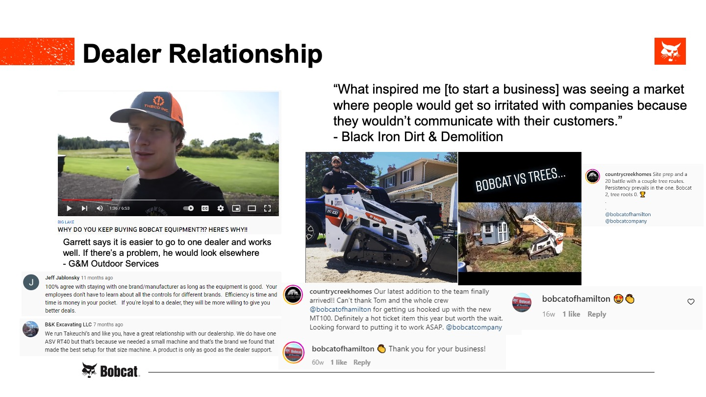

Project information
- Category: Insights Research
- Client: Bobcat
- Website: www.bobcat.com
- Project date: August, 2022
A Capstone Project for a Memorable Co-op Experience
In the spring and summer of 2022, I got the pleasure of working with a tremendous marketing team in Minneapolis for Bobcat. My main role was providing reports about the performance of our traditional media advertising (print, magazine, and video). I also helped out with creating dynamic graphs to help monitor the ROI of our spend on media. Though most of the time I worked in data analysis, I had other fun projects to do over the course of my co-op. Here are some highlights of what I did:
- Learned about SEO and fixed links for our brand new site launch in July
- Researched equestrian sports to give Bobcat suggestions on how to target horse owners
- Created a new organizational flowchart to help our team better understand how a marketing campaign gets approved
Consumer Persona Analysis
Since the majority of Bobcat owners are Gen X or Baby Boomers, I was wondering what the reasons are for why the younger generations are less likely to own Bobcat products compared to other competitors. Since Bobcat is the highest price point in the compact construction equipment industry, my initial reaction is that younger construction entrepreneurs do not want to commit thousands of dollars for higher quality loaders when they can find a vehicle that does the same work for cheaper. While I find that to be generally true from my project, I have also uncovered a lot of other insights to why this demographic may opt for other brands other than Bobcat.
Our brand marketing team has already produced persona demographics and psychographics for me to use to analyze this problem. The two personas that they created, “Learning the Ropes” and “Just Needs to Work”, fits the description of the target audience that I wanted to analyze—younger entrepreneurs.
The indexes of the psychographics for these two personas also matched my assumption of what younger entrepreneurs look for when purchasing a vehicle. They don’t really care whether the vehicle is built to last which means they tend to gravitate towards the cheaper price tag. The boxes highlighted in green represent a higher index and the boxes highlighted in red represent a lower index.
Now that I have confirmed some initial thoughts about the young entrepreneur and how they viewed Bobcat and their practices regarding their equipment use, I went and analyzed real companies that fit the persona description and tried to uncover some key insights and their motivations.
Young Entrepreneur Findings
My method for retrieving the data was from a previous project done at Bobcat where they found companies who tagged #Bobcat on their social media and gave them free merch and a handwritten thank you note. This was helpful for me as it was a great starting spot to find a lot of information about young entrepreneurs. This is because younger people in the construction industry (Gen Z and Millenials) are more likely to actively use social media to advertise their company than older folks who rely on word-of-mouth and experience to get their clients. In total, I analyzed 30 companies that fit the young entrepreneur description and provided my own data and notes which supported my findings that I found about this demographic.
For all of my findings and insights, I supported them with screenshots of real companies showcasing that behavior from their social media page.
After I presented all of these insights to the executive marketing group of Bobcat, I opened up with a discussion of some of my ideas on what Bobcat can do for the upcoming younger generation. I argued that it is a massive opportunity for Bobcat if they can convert them to trust and rely on the brand despite the high cost. I suggested that early exposure to Bobcat products for young entrepreneurs is key for them to understand that the difference in quality greatly impacts the outcome of their work. If Bobcat can better communicate to this younger demographic about the significance of maintenance costs and how having higher quality equipment will save them time and money due to less repairs and breakdowns, I truly believe that they will see Bobcat more favorably which will result in more sales of Bobcat products.
Conclusion
This project was really fun and insightful for me since it was the first project that I proposed to my supervisor and spearheaded the direction of it myself. I wanted to cap off my great experience at Bobcat with a capstone project that utilizes my best skills. As a strategic thinker, I looked between the lines of what is already thought to be possible for the potential to uncover something even greater. I believe that I have given Bobcat a great opportunity to continue cultivating the younger generations to their brand. With this experience, I am confident to do the same for other brands or industries that I might work with in the future.
Link to Full Presentation